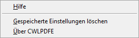

Wenn im WinLine Formular Editor kein Fenster oder das Fenster "Formularliste" geöffnet wurde und aktiv ist, dann stehen folgende Funktionen im Menü "Hilfe" zur Verfügung:

Ø Hilfe
Ruft die WinLine - Hilfe auf.
Ø Gespeicherte Einstellungen löschen
Durch Anwählen dieses Eintrages werden alle vorgenommenen Einstellungen im Formulareditor (z.B. Positionen des Werkzeugkastens, Einstellungen zur Anzeige der Flags usw.) auf den Standardwert zurückgesetzt (der Registry-Eintrag "HKEY_CURRENT_USER/Software/Mesonic/cwlpdfe" wird entfernt).
Ø Über CWLPDFE
Stellt Informationen zur Version des Formular Editors zur Verfügung